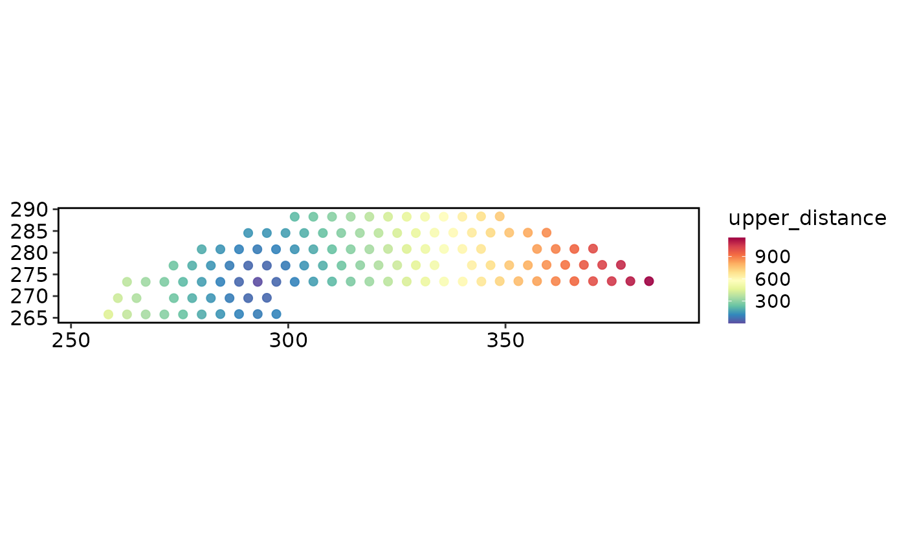

Use semla::RadialDistance() to calculate distances from selected spatial
regions and write the returned columns to Seurat metadata.
Usage
RunSemlaRadialDistance(
srt,
column_name,
selected_groups = NULL,
column_suffix = NULL,
image_type = "tissue_lowres",
verbose = TRUE,
...
)Arguments
- srt
A
Seuratobject with spatial image data.- column_name
Metadata column containing region labels.
- selected_groups
Region labels used by semla. If
NULL, semla uses all labels incolumn_name.- column_suffix
Optional suffix for metadata columns returned by semla.
- image_type
Image scale used by
semla::UpdateSeuratForSemla()when the object does not already contain a Staffli object.- verbose
Whether to print the message. Default is
TRUE.- ...
Additional arguments passed to semla.
Examples
data(visium_human_pancreas_sub)
spatial <- subset(
visium_human_pancreas_sub,
cells = colnames(visium_human_pancreas_sub)[1:120],
features = rownames(visium_human_pancreas_sub)[1:400]
)
#> Warning: Not validating Centroids objects
#> Warning: Not validating Centroids objects
#> Warning: Not validating FOV objects
#> Warning: Not validating FOV objects
#> Warning: Not validating FOV objects
#> Warning: Not validating FOV objects
#> Warning: Not validating FOV objects
#> Warning: Not validating FOV objects
#> Warning: Not validating Seurat objects
spatial$region <- ifelse(
spatial$y > stats::median(spatial$y),
"upper",
"lower"
)
upper_center <- c(
stats::median(spatial$x[spatial$region == "upper"]),
stats::median(spatial$y[spatial$region == "upper"])
)
spatial$upper_distance <- sqrt(
(spatial$x - upper_center[1])^2 + (spatial$y - upper_center[2])^2
)
SpatialSpotPlot(
spatial,
group.by = "upper_distance",
overlay_image = FALSE,
coord.cols = c("x", "y")
)

if (
requireNamespace("semla", quietly = TRUE) &&
identical(Sys.getenv("SCOP_RUN_SPATIAL_BACKEND_EXAMPLES"), "true")
) {
spatial <- RunSemlaRadialDistance(
spatial,
column_name = "region",
selected_groups = "upper",
column_suffix = "upper_distance",
verbose = FALSE
)
}